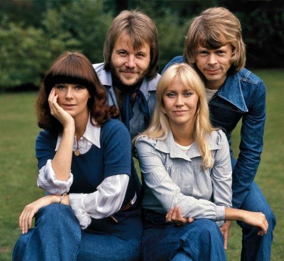
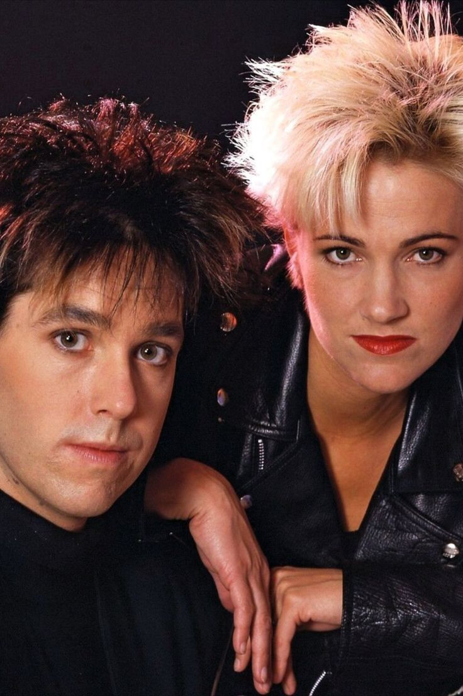
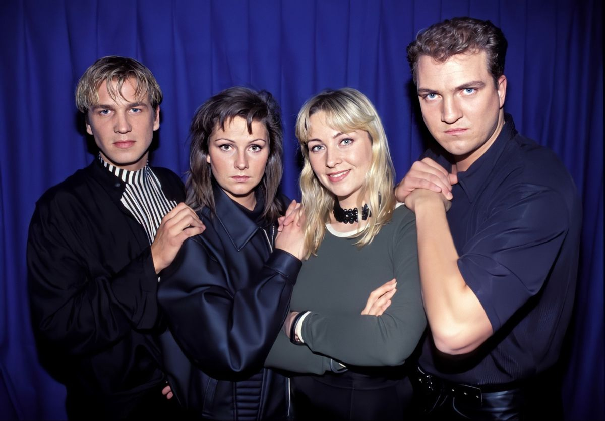

ABBA
ABBA es un grupo sueco de música pop, integrado por Agnetha Fältskog, Björn Ulvaeus, Benny Andersson y Anni-Frid «Frida» Lyngstad. El cuarteto se formó en Estocolmo en 1972 y logró fama internacional al triunfar en el Festival de la Canción de Eurovisión 1974. Desde entonces, ABBA ha ganado popularidad empleando melodías pegadizas, letras simples y su sonido propio, caracterizado por las armonías de las voces femeninas y el wall of sound. Sus grabaciones tuvieron un impacto comercial que los llevó a convertirse en los artistas más exitosos de su compañía discográfica y a ser la banda con más ventas en los años 1970.

ROXETTE
Roxette fue un dúo sueco de pop rock formado por la cantante Marie Fredriksson y el cantante y compositor Per Gessle. El dúo es considerado uno de los grupos suecos más importantes y de mayor éxito desde los tiempos de ABBA. Si bien el grupo se fundó en 1986, la fama internacional llegó en 1989 cuando la canción «The Look» los elevó al tope de las principales listas musicales de los Estados Unidos y luego por su participación en Pretty Woman con su canción «It Must Have Been Love», en su segunda versión editada especialmente para esta película.

ACE OF BASE
Ace of Base es un grupo pop de Suecia, fundado en 1990 por los hermanos Jonas, Jenny y Malin Berggren, con Ulf Ekberg. Se convirtió en uno de los grupos clave de la música dance de los años 90 y uno de los grupos más populares de la década citada. Con sus melodías mezcla de Pop y Dance junto a sus pegadizas letras lograron llegar al número uno en todo el mundo. Su álbum más exitoso es Happy Nation (1993) es uno de los álbumes debut más vendidos de todos los tiempos, y fue certificado nueve veces platino en los Estados Unidos. El grupo lanzó cuatro álbumes de estudio entre 1992 y 2002, vendiendo más de 30 millones de copias en todo el mundo, convirtiéndose en la tercera banda sueca más exitosa de todos los tiempos, después de ABBA y Roxette.